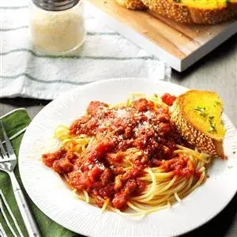

Slow Cooked Spaghetti Sauce
- Total time7 hrs
- Serves8
- Ingredients13
- Steps2

Ingredients
- 1 pound ground beef or bulk Italian sausage
- 1 medium onion, chopped
- 2 cans (14-1/2 ounces each) diced tomatoes, undrained
- 1 can (8 ounces) tomato sauce
- 1 can (6 ounces) tomato paste
- 1 bay leaf
- 1 tablespoon brown sugar
- 4 garlic cloves, minced
- 1 to 2 teaspoons dried basil
- 1 to 2 teaspoons dried oregano
- 1 teaspoon salt
- 1/2 to 1 teaspoon dried thyme
- Hot cooked spaghetti
Directions
- In a large skillet, cook beef and onion over medium heat until meat is no longer pink; drain.
- Transfer to a 3-qt. slow cooker. Add the next 10 ingredients. Cover and cook on low for 7-8 hours or until heated through. Discard bay leaf. Serve with spaghetti.
Recipe credit: tasteofhome.com)